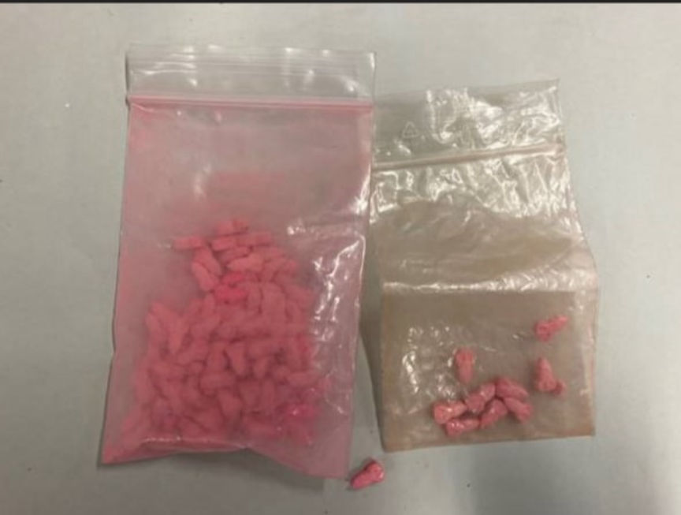
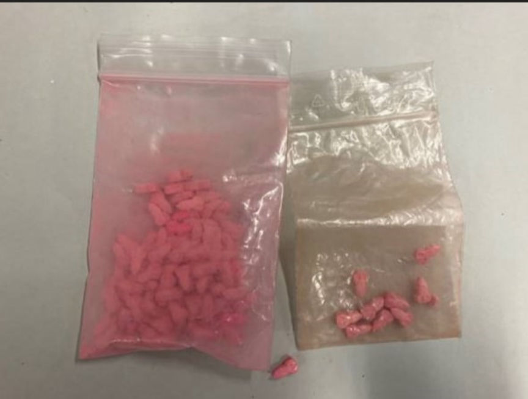

Austrian Resold Drugs Purchased on The Dark Web
Authorities in Upper Austria arrested a 39-year-old man from Linz, accused of reselling large quantities of drugs he purchased on the dark web.

According to an announcement by the Upper Austria State Criminal Police Office (LKA), for over 10 years, the 39-year-old suspect purchased and resold large quantities of a wide variety of drugs including cannabis, LSD trips, cocaine, and ecstasy tablets.
The 39-year-old's arrest resulted from the arrest of two drug dealers aged 22 and 31 in August 2022. The duo's drug trafficking operation allegedly distributed drugs worth at least 130,000 euros. The drugs sold by the duo included 5 kilograms of amphetamine, 2.5 kilograms of cannabis, 120 grams of cocaine, as well as undisclosed quantities of MDMA, LSD, and ketamine. The cops are investigating 40 people suspected of purchasing drugs from the duo.
On being questioned, the 22-year-old reportedly told the cops that the duo had been purchasing the drugs they were distributing from the 39-year-old.
The investigators consequently executed a search warrant on the 39-year-old's residence. The search resulted in the seizure of undisclosed drugs. On being interviewed, the 39-year-old told the investigators that he had been importing, using, and reselling drugs he purchased through the dark web. The suspect was, however, not arrested.
Further investigations revealed that the 39-year-old had not stopped buying drugs from the dark web even though he knew he was under investigation. The investigators subsequently executed a search warrant on his residence on January 23, 2023. The search resulted in the seizure of more drugs and the arrest of the 39-year-old.
The Linz public prosecutor's office believes the 39-year-old ordered and resold a total of approximately 18 kilograms of cannabis, 3,000 LSD trips, 3.6 kilograms of cocaine, and 900 ecstasy tablets. The suspect's drug trafficking operation went on for more than a decade.

Drugs seizied from the suspect
According to an announcement by the Upper Austria State Criminal Police Office (LKA), for over 10 years, the 39-year-old suspect purchased and resold large quantities of a wide variety of drugs including cannabis, LSD trips, cocaine, and ecstasy tablets.
The 39-year-old's arrest resulted from the arrest of two drug dealers aged 22 and 31 in August 2022. The duo's drug trafficking operation allegedly distributed drugs worth at least 130,000 euros. The drugs sold by the duo included 5 kilograms of amphetamine, 2.5 kilograms of cannabis, 120 grams of cocaine, as well as undisclosed quantities of MDMA, LSD, and ketamine. The cops are investigating 40 people suspected of purchasing drugs from the duo.
On being questioned, the 22-year-old reportedly told the cops that the duo had been purchasing the drugs they were distributing from the 39-year-old.
The investigators consequently executed a search warrant on the 39-year-old's residence. The search resulted in the seizure of undisclosed drugs. On being interviewed, the 39-year-old told the investigators that he had been importing, using, and reselling drugs he purchased through the dark web. The suspect was, however, not arrested.
Further investigations revealed that the 39-year-old had not stopped buying drugs from the dark web even though he knew he was under investigation. The investigators subsequently executed a search warrant on his residence on January 23, 2023. The search resulted in the seizure of more drugs and the arrest of the 39-year-old.
The Linz public prosecutor's office believes the 39-year-old ordered and resold a total of approximately 18 kilograms of cannabis, 3,000 LSD trips, 3.6 kilograms of cocaine, and 900 ecstasy tablets. The suspect's drug trafficking operation went on for more than a decade.